Week 1 - Day 2
← Back to Portfolio
Internship Report – Day 2
Objective
To expand my creative and technical toolkit by installing and exploring OBS Studio, GIMP, FFmpeg, Inkscape, and Autodesk Fusion 360, and understanding how these tools can support internship projects, GitHub workflows, and technical documentation.
Tools Used
- OBS Studio – for recording and streaming project demos
- GIMP – for raster image editing and graphics
- FFmpeg – for multimedia processing and optimization
- Inkscape – for vector graphics and SVG design
- Autodesk Fusion 360 – for 3D modeling and simulation
- GitHub – for saving and versioning project files
Step 1: Installing OBS Studio
I downloaded and installed OBS Studio to record project demos and tutorials.
- Screen recording
- Live streaming
- Scene management
- Audio mixing
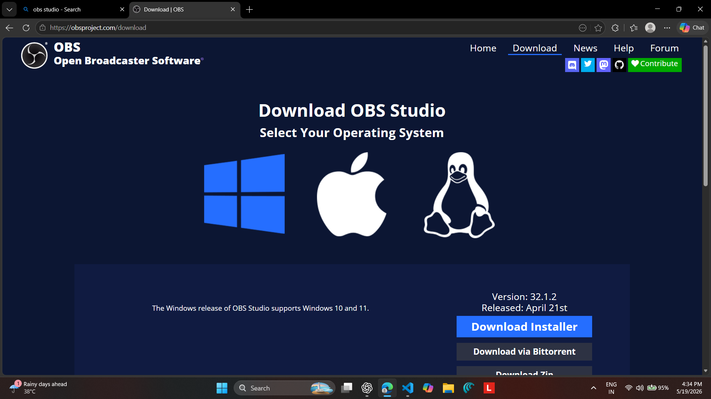
Applications of OBS Studio
- Recording coding sessions
- Creating tutorials and demonstrations
- Uploading optimized videos to GitHub
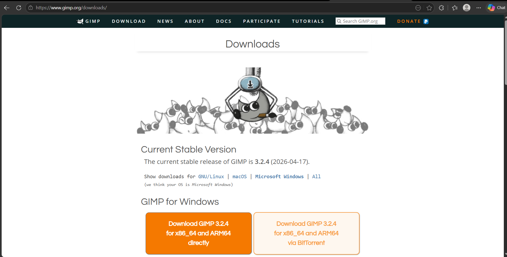
Step 2: Installing GIMP
I installed GIMP for image editing and visual design tasks.
- Photo editing
- Logo design
- Layer management
- Graphic creation
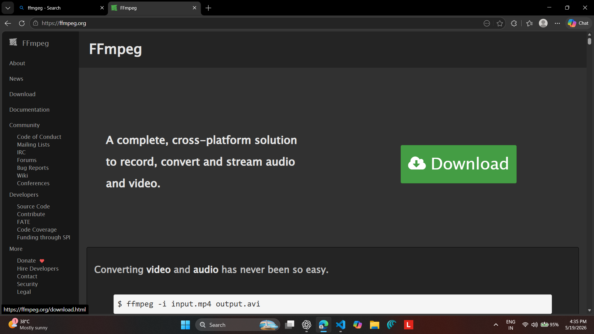
Applications of GIMP
- Editing portfolio screenshots
- Enhancing documentation visuals
- Designing graphics and logos
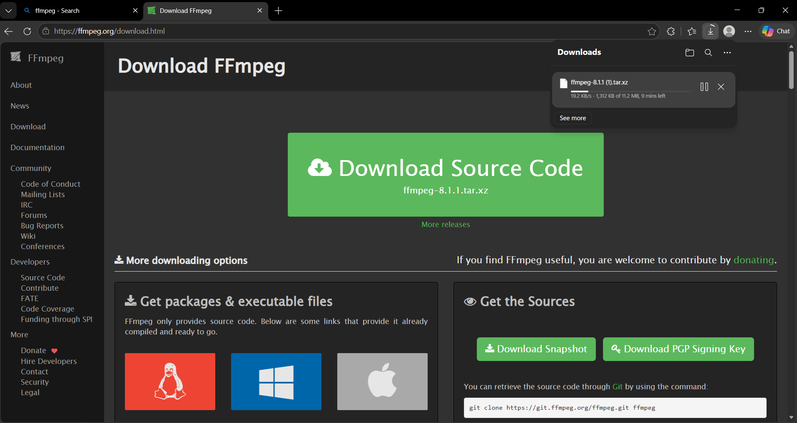
Step 3: Installing FFmpeg
I installed FFmpeg for multimedia conversion and processing.
- Video compression
- Audio extraction
- Format conversion
- Video resizing
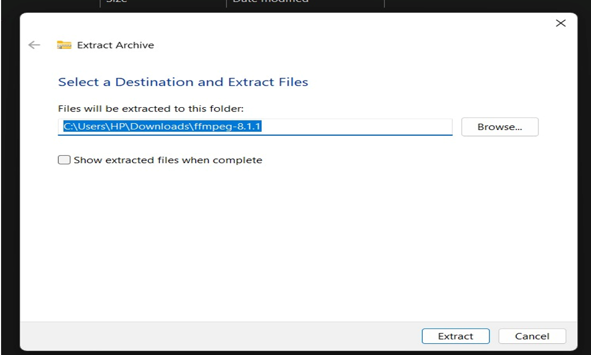
Applications of FFmpeg
- Compressing OBS recordings
- Preparing lightweight videos for websites
- Automating multimedia workflows
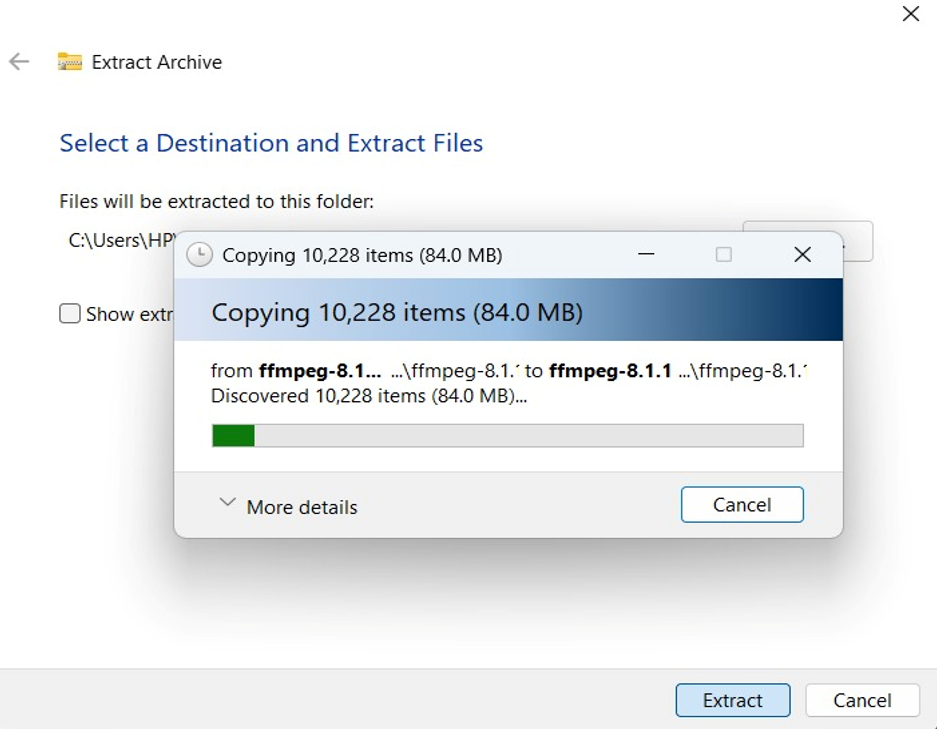
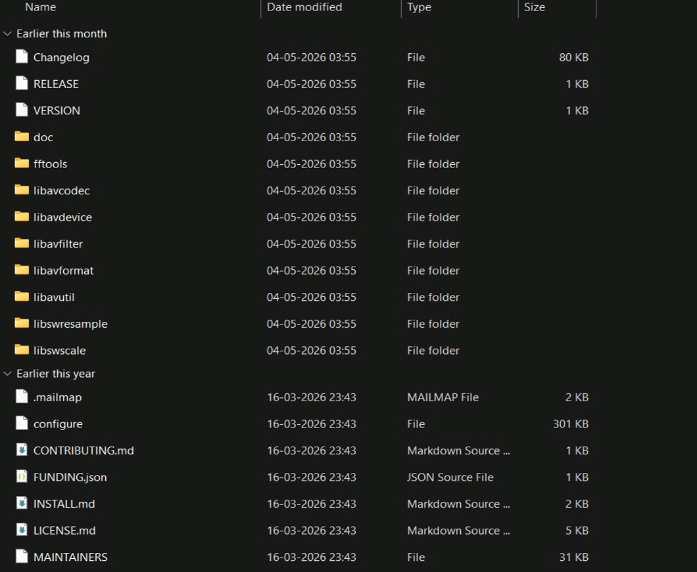
Step 4: Installing Inkscape
I installed Inkscape for vector graphics and SVG editing.
- Creating diagrams
- Designing logos
- Editing SVG files
- Typography and vector artwork
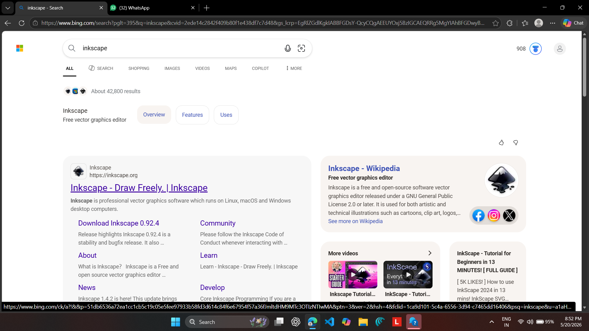
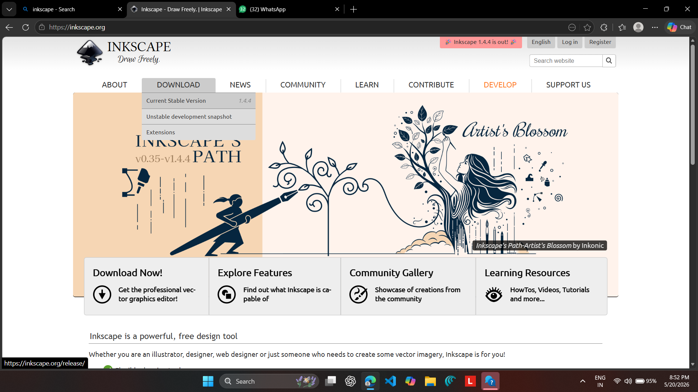
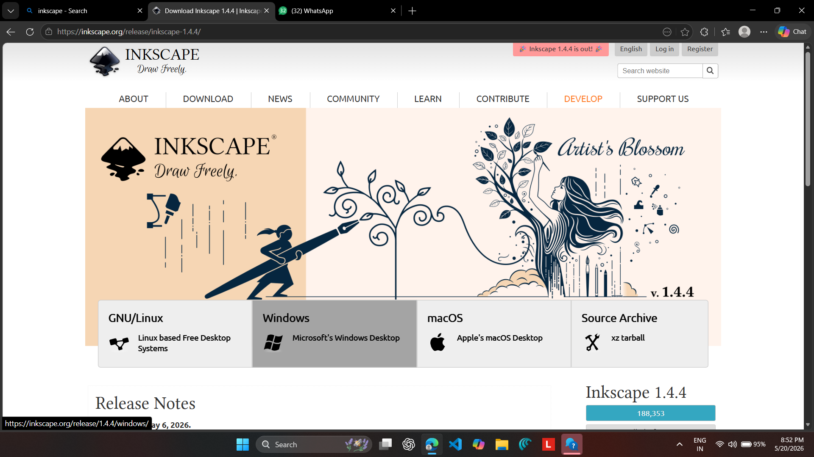
Applications of Inkscape
- Creating scalable logos
- Designing internship diagrams
- Making SVG graphics for websites
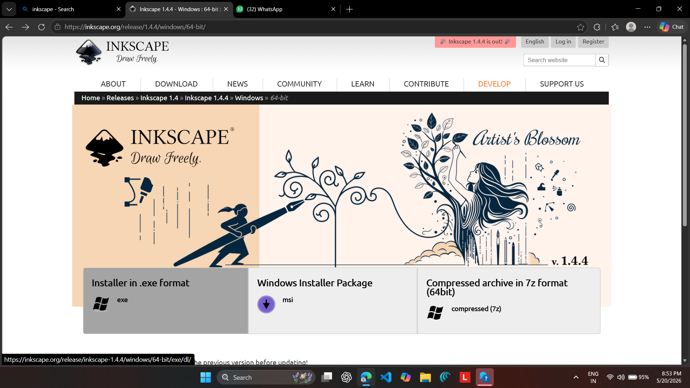
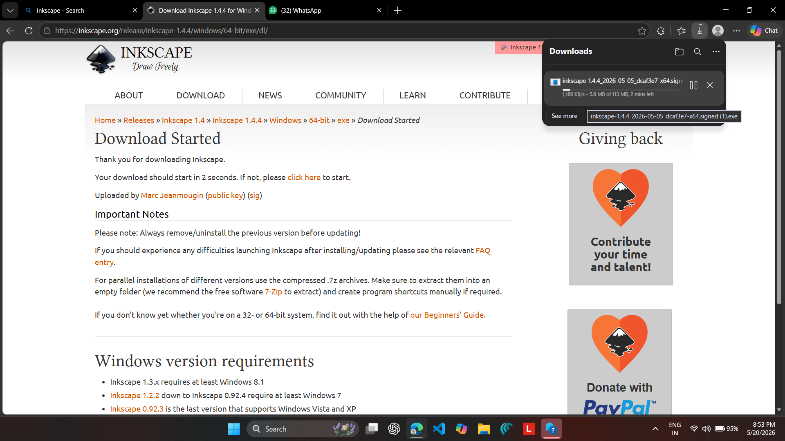
Step 5: Installing Autodesk Fusion 360
I installed Autodesk Fusion 360 with a student license for 3D modeling and simulation.
- 3D modeling
- Simulation
- CAM toolpaths
- Rendering and visualization
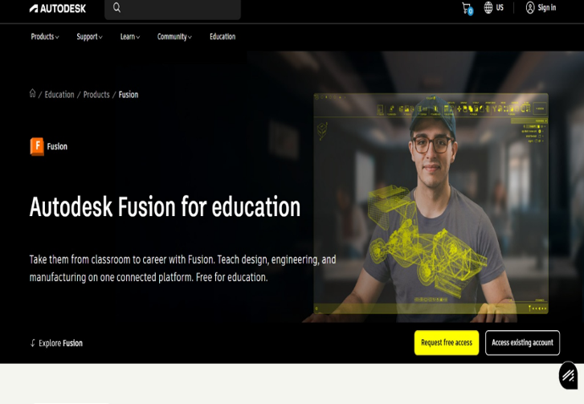
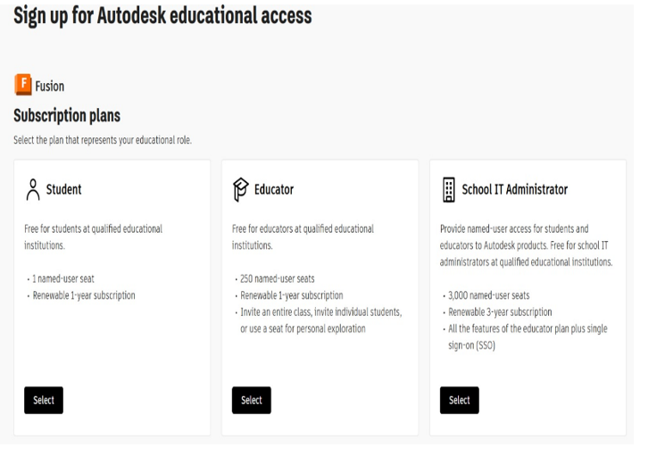
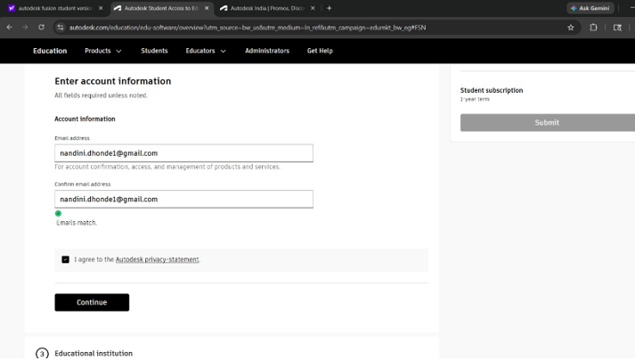
Applications of Fusion 360
- Creating 3D prototypes
- Uploading CAD designs to GitHub
- Adding rendered visuals to reports
Outcome
- Successfully installed and explored five professional tools.
- Learned the core features of each application.
- Connected all tools to internship documentation and GitHub workflows.
Reflection
Day 2 provided me with a complete creative and technical toolkit. OBS Studio helps with recording, GIMP supports image editing, FFmpeg optimizes media, Inkscape creates vector graphics, and Fusion 360 enables 3D modeling. Together, these tools improve the quality, creativity, and professionalism of my internship projects.
GitHub Integration
I also learned how these tools can integrate with GitHub repositories for documentation, sharing, and collaboration.
git add .
git commit -m "Added Day 2 internship documentation"
git push origin main
Conclusion
Day 2 focused on expanding my software toolkit and understanding how professional tools can support technical creativity, documentation, and collaborative workflows. These tools will continue to support future internship projects and portfolio development.
← Back to Portfolio